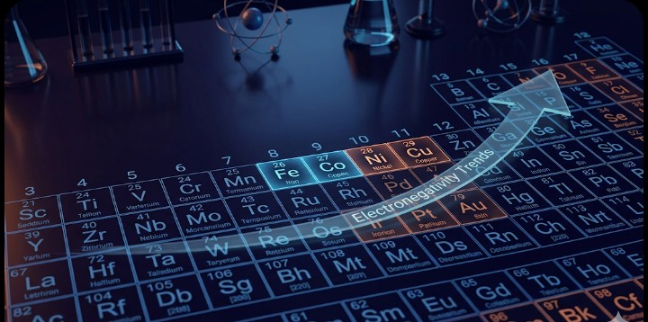
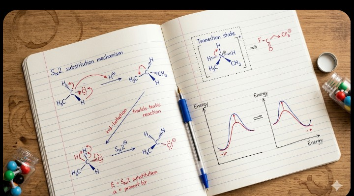

Chemistry is often called the 'Rank Booster' in JEE. While Physics and Maths can be time-consuming, Chemistry allows you to solve 30 questions in 40-45 minutes if your concepts are crystal clear. For JEE 2026, the strategy must be a blend of logic, memory, and speed.
Image Alt: chemistry-lab-setup.jpg (The world of chemical reactions and molecules)
To master Chemistry, you must treat its three branches as different subjects entirely. Each requires a unique mindset.
This section is similar to Physics. It’s all about understanding concepts and applying formulas.
Organic Chemistry is not about cramming reactions; it's about understanding Mechanisms.
This is where NCERT is your Bible. Almost 90-95% of questions in JEE Mains are directly from NCERT lines.

Image Alt: periodic-table-focus.jpg (Mastering trends in the periodic table)
| Branch | Primary Resource | Key Strategy |
|---|---|---|
| Physical | N. Awasthi / P. Bahadur | Solve at least 50 Numericals per chapter. |
| Organic | M.S. Chauhan / Solomons | Practice Name Reactions and Reagents daily. |
| Inorganic | NCERT + JD Lee (Reference) | Make colorful charts for Block Elements (s, p, d, f). |
If you are short on time, prioritize these High-Yield topics:

Image Alt: chemistry-reaction-mechanism.png (Visualizing how electrons move in a reaction)
Revision in Chemistry should be frequent. Use Flashcards for remembering catalysts and color changes in qualitative analysis. For Organic, try to draw the entire reaction map of a functional group on a single A4 sheet.
Chemistry can be your best friend in the exam hall. It saves you time that you can later use for a tough Physics numerical or a lengthy Maths problem. Start with NCERT, build your logic with GOC, and keep practicing numericals. Success is just a reaction away!